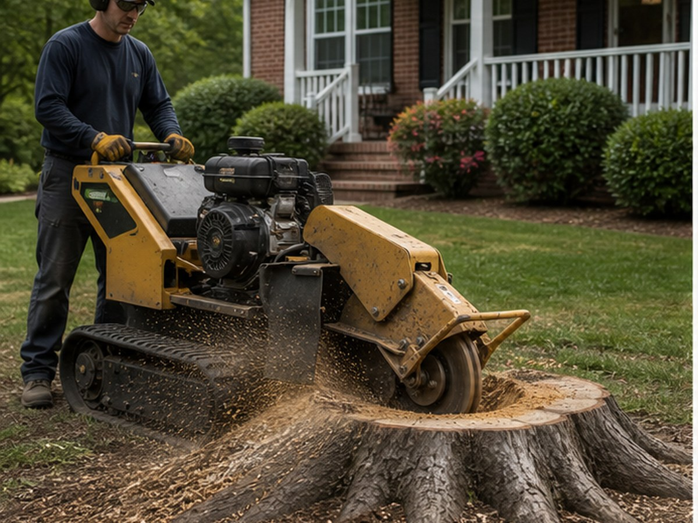
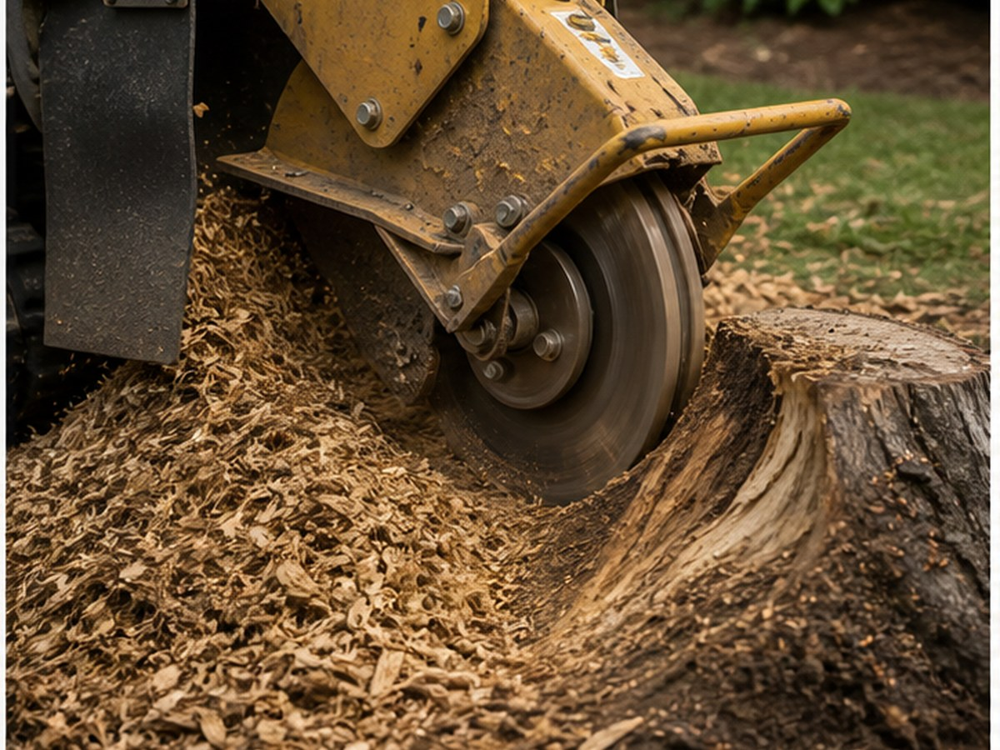
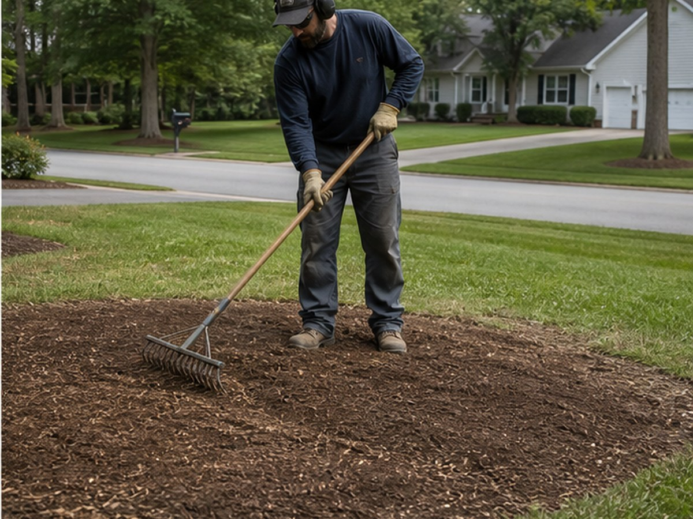

Powdersville tree and outdoor service
Tree and stump work presented with a clear emergency path.
Stump grinding, Stump removal, Root cleanup, Yard restoration, Debris removal, Free estimates for Powdersville, SC customers.
- 5.011 Google reviews
- Tree / Stump RemovalPowdersville, SC
- EasyTap-to-call scheduling

Services
Clear service options for real customers.
- Stump grinding
- Stump removal
- Root cleanup
- Yard restoration
- Debris removal
- Free estimates

Built for urgent outdoor calls
Tree and stump customers need fast contact, clear services, and proof before they schedule work.
Stump Eliminator can lead with its 5.0-star reputation while giving customers a clear path to review services and call for scheduling.

Outdoor service path
Choose the outdoor need.
Tree and stump work should start with location, access, urgency, and cleanup needs.
Outdoor proof
Stump Eliminator gives Powdersville customers review proof before they call.
- 5.0-star Google rating
- 11 public reviews
- Powdersville area, SC
Contact
Stump Eliminator
Powdersville area, SC